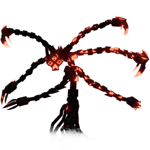

The Gravetender
背景

名为 Gravetender 的恶魔，诞生自渴望永恒安眠的天使。
痛苦让它失去了自我感。这个恶魔因根系而膨胀，将自己变成一种虫状生物，身体由数百只手臂构成，在土壤中挖掘、潜行，目标是找到创造者的尸体。只有摧毁那具尸体，才能终结恶魔的痛苦。
它哀悼所有倒在它面前的人，确保他们被妥善纪念。不过，这也可能只是为了标记它已经搜索过哪里。
策略
The Gravetender 战斗由 1 个阶段组成。
The Gravetender 是半固定 Boss，偶尔会在玩家脚下的竞技场地底钻行以移动。它有时会射出 Gravity Well，那是一个缓慢移动的球体，会把半径内所有玩家拉入其中；它无法被击杀，只会随着时间消失。
统计
基础 HP：7800
伤害：物理和暗影
| 属性 | 抗性 |
|---|---|
| 物理 | 中性 (1x) |
| 火焰 | 抗性 (0.5x) |
| 冰霜 | 弱点 (1.25x) |
| 电击 | 中性 (1x) |
| 光耀 | 弱点 (1.25x) |
| 暗影 | 中性 (1x) |
| 毒 | 中性 (1x) |